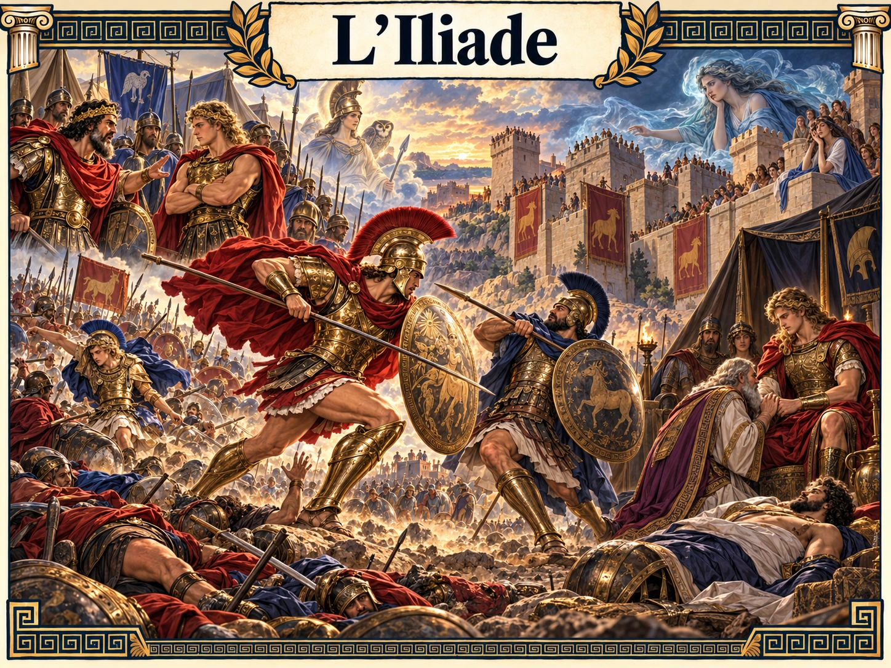

OMERO · ILIADE
TAPPA 01 / 10 · LIBRO IIRA
L’ira di Achille
Che cosa è successo
La collera di Achille determina l’azione del poema.
I VERSI CHIAVE
Cantami, o Diva, del Pelíde Achille
Per comprendere
UNA DOMANDA PER PENSARE
ATLANTE NARRATIVO · LEZIONE VI
Dieci momenti decisivi del poema di Omero. Una storia da attraversare, un verso da ascoltare, una domanda da portare con sé.
Esplora le dieci tappe ↓
UN PERCORSO, DIECI SVOLTE
Seleziona una tappa: la scena, i versi e le domande cambiano con te. Puoi tornare indietro in qualsiasi momento.
OMERO · ILIADE
La collera di Achille determina l’azione del poema.
I VERSI CHIAVE
Cantami, o Diva, del Pelíde Achille
UNA DOMANDA PER PENSARE
DAL RACCONTO ALLA RIFLESSIONE
Il poema comincia con l’ira di un guerriero e si chiude con il dolore di due uomini che si riconoscono. La caduta di Troia rimane fuori dall’Iliade: l’ultima parola spetta ai funerali di Ettore.
Continua con il testo integrale e il test →